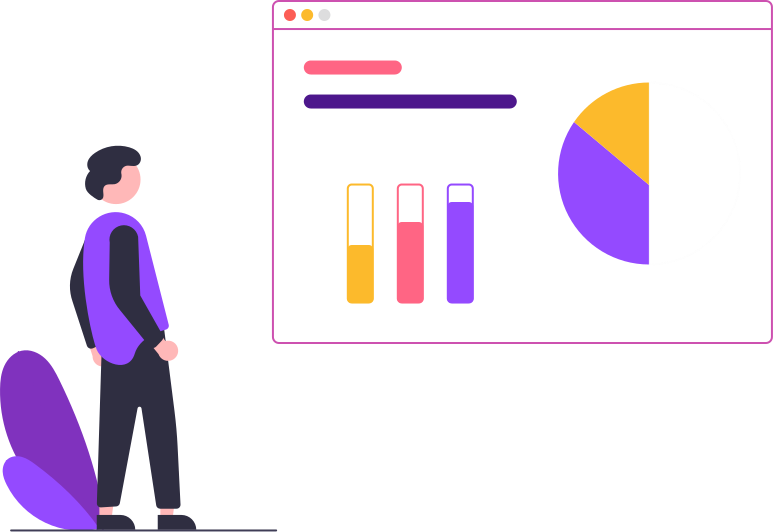

Seja bem vindo ao How2?
Sua profissão em um só caminho!
Conheça agora sua verdadeira vocacação, para sua futura carreira
Faça já o download

Para que serve o How2?
O How2 tem o objetivo de ajudar nossos jovens a escolherem suas futuras profissões por meio de troca de experiências de profissional para jovem. Já que é nítido a presença de diversos tipos de problemas que dificultam essa jornada do jovem.
82% dos jovens
Não sabem ou são indecisos sobre qual carreira seguir.
30% dos vestibulando
Ainda não escolheram qual profissão querem exercer no futuro
Crise dos 25 anos
Crise de incerteza profissional em pessoas de 25 a 33 anos
Influência dos pais
Pais reservados estão cada vez mais forçando as opçoes dos filhos.
